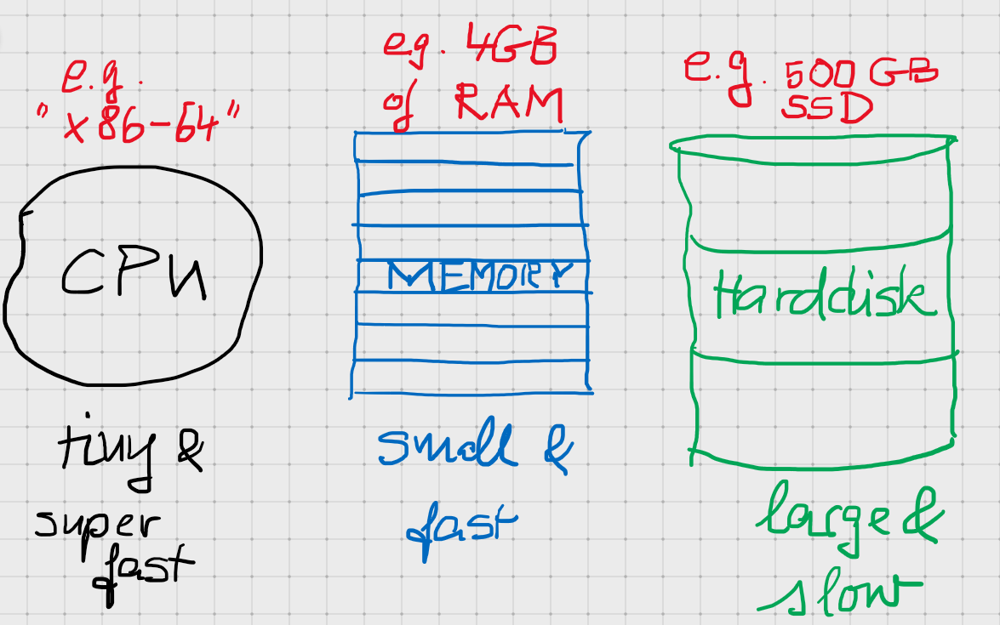
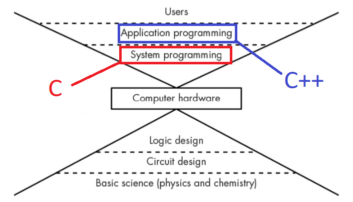

Introduction to C and C++
CSC100 Introduction to programming in C/C++ Spring 2024
Table of Contents
- 1. What will you learn?
- 2. What is C?
- 3. How popular is C?
- 4. How important is C?
- 5. What is a programming language?
- 6. Where does C come from?
- 7. Standardization
- 8. How computers work
- 9. How programs are created and processed
- 10. Strengths and weaknesses of C
- 11. What is the difference between C and C++?
- 12. Why are we not just learning C++?
- 13. Summary
- 14. Glossary
- 15. References
1. What will you learn?
- What is C?
- What is its origin?
- What is its importance?
- What's the difference to C++?
- Why are we not just learning C++?
- What are C's strengths and weaknesses?
Source:
- Textbook King (2008) ch.11
- See also slides (GDrive)
2. What is C?
- C is a programming language created in the early 1970s.
- It grew out of the development of the UNIX operating system
- In turn, UNIX grew out of a space travel game (Brock, 2019).
Figure 1: Thompson & Ritchie & DEC PDP-11, 1970. (Brock, 2019)
3. How popular is C?
- C consistently ranks among the top 3 programming languages.
- TIOBE Language of the year 2008, 2017, 2019
- Highest position since 2001: #1 in Sep 2021
- Lowest position sicne 2001: #2 in Jan 2024

Figure 2: TIOBE Index for C, 2002-2023 (Source: TIOBE)
- Popularity contest: cp. TIOBE Index2
_
- Of the top 10 languages, only SQL (databases), and Assembly (machine) language are not C-type languages!
Figure 3: IEEE index - by (Source: Cass, 2023)
"Python alone does not make a career. In our “Jobs” ranking, it is SQL that shines at No. 1. Ironically though, you’re very unlikely to get a job as a pure SQL programmer. Instead, employers love, love, love, seeing SQL skills in tandem with some other language such as Java or C++." (Cass, 2023)
4. How important is C?
Figure 4: Real world applications of C (Source: DataFlair)
Some well-known programs written in C:
- The Linux kernel (and therefore, Android - 40%)
- UNIX operating system (core of MacOS and iOS - 25%)
- Windows operating system (core of most PCs - 30%)
- Doom (early video game) and Wolfenstein 3D
- Git version control system
- C compilers (Clang, GCC/MinGW)
- Interpreted languages like Python
- Any software that crosses platforms easily (portable)
- Software for the Curiosity Mars rover and most space apps
See also:
"Why C programming is awesome" (Hawkes, 2016).
Video summary:
- Basis of most modern programming languages like Java, C#, C++, Python etc.
- Use in high performance embedded systems like the Curiosity Rover on Mars.
- Language for kernel development (manager for the operating system).
- Writing code in C requires you managing your own memory.
- In the process you find out how a computer really works.
- C is in high demand for jobs
- C is portable (runs everywhere) and efficient (runs fast)
"C Programming Language (Brian Kernighan)" (Lex Fridman, 2020)
- Why did C survive, and why did it have such a long-lasting impact?
- Expressiveness (natural to use), efficiency (fast, small), environment (Unix)
- What did it take to write the definitive book on C? (Popular and standardizing)
- In 1977 there were many Unix systems and no authoritative document
- Book included a crystal-clear reference manual
- Find examples that might hang together
- What do you find powerful about examples?
- It'll tell you how to do something
- It'll help you do something similar but perhaps more ambitious
- Many examples were picked for Unix' text processing problems: "read input, write output"
- Find things that are representative of what people want to do (in core form)
- Why did C survive, and why did it have such a long-lasting impact?
5. What is a programming language?
"A programming language is a formal language comprising of a set of strings that produce various kinds of machine code output. Programming languages are one kind of computer language, and are used in computer programming to implement algorithms." (Source: Wikipedia)
- Formal language?
- Set of strings?
- Machine code?
- Algorithm?
Fortunately, computer (and data) science isn't really a science at all!
(It's more of a craft like mining, knitting, or pottering.)

Figure 5: [Scientific] fields arranged by "purity" (xkcd)
In the xkcd cartoon, computer (and data) science do not even figure, because they're so interdisciplinary (the opposite of "pure"). Still, there is a lot of "pure" mathematics, physics and even biology that plays a role in computer science (and programming).
The most important parts of maths for computer science are…? That's a good question for our new mildly demented friend, ChatGPT (GPT-3.5):
The most important parts of mathematics for computer science are…?
[AI]: The most important parts of mathematics for computer science include:
- Discrete Mathematics: This branch of mathematics deals with objects that are finite or countable. It is essential for understanding logic, set theory, combinatorics, and graph theory, which form the foundation of computer science.
- Logic: Logic is crucial for reasoning and problem-solving in computer science. It covers topics such as propositional logic, predicate logic, and formal proof techniques.
- Probability and Statistics: Probability theory plays a significant role in analyzing uncertainty and randomness in algorithms and data. Statistics is essential for understanding data analysis, machine learning, and data-driven decision-making.
- Calculus: Calculus is important for analyzing the behavior of algorithms, optimizing functions, and solving problems involving continuous quantities.
- Linear Algebra: Linear algebra is used extensively in computer graphics, machine learning, data analysis, and many other areas of computer science. It provides tools to understand and manipulate vectors, matrices, and linear transformations.
- Number Theory: Number theory is foundational to cryptography and data encryption techniques used in computer security.
These areas of mathematics provide a solid foundation for understanding fundamental concepts and theoretical aspects of computer science and form the basis for many algorithms, data structures, and analysis techniques used in the field.
[ME]:
6. Where does C come from?

Figure 6: "K&R" (Kernighan/Ritchie, 1978)
- By-product of the UNIX operating system 1969 3
- Developed on DEC PDP-7 (computer with 8K words of main memory)
- Written originally in assembly language
- UNIX rewritten in C by 1973 for DEC PDP-11
- Standardization of C, 1973-2018
Challenge: what does "8K words of main memory" mean? 4
See also: C Programming Language | Brian Kernighan & Lex Fridman
- Text processing problems were inherited from Unix
- Examples should be realistic, useful and representative
- If you're the first in anything, everybody else has to follow
7. Standardization

Figure 7: How standards proliferate (Source: xkcd)
Details: see ANSI (American National Standards Institute)
Sometimes, standardization goes awry. For example, Python 3 was not "backwards compatible" with Python 2.7, R seems split in a "Tidyverse" and a "base R" community.
8. How computers work
Well, at least this is one way of looking at it.

Figure 8: Computer architecture (simplified)
The "hard disk" can also be a Solid State Drive (SSD) or some other form of Non-Volatile Memory (NVM) - i.e. it doesn't disappear when the power goes out.
9. How programs are created and processed
9.1. Simplified process
- WRITE source code in an editor (NVM = harddisk)
- COMPILE source code to machine code (RAM = memory)
- RUN program (CPU = Central Processing Unit)
- DISPLAY results (RAM = Memory)
- SAVE result (NVM = harddisk)
9.2. Complete process
Specifically for C and our compiler GCC, this process looks technically like this:

Figure 9: GCC compilation process (Source: Hock-Chuan, 2018).
10. Strengths and weaknesses of C
| STRENGTH | WEAKNESS |
|---|---|
| Efficiency | Permissiveness (Error-prone) |
| Portability | Terseness and Understanding |
| Power | Large program maintenance |
| Flexibility | |
| Standard library | |
| Integration with UNIX |
- Efficiency: do a lot with little effort (small programs)
- Portability: it works everywhere, on anything
- "Power": you can do brain surgery with a pencil
- Flexbility: you can do the same thing in many different ways
- "Standard library": pre-defined functions/tasks; "stdio.h", a standard library for "I/O" (Input/output)
- Integration with UNIX (because UNIX is the motherlobe)
11. What is the difference between C and C++?
C++ is a superset of C.

Figure 10: C/C++ logos
| WHAT | C | C++ |
|---|---|---|
| TIME | Thompson/Ritchie 1970s | Stroustrup 1980s |
| TYPE | Imperative procedural | Object-oriented |
| GOOD | System programming | Games and graphics |
| USED | Internet of Things | Flight Software |
Source: Lemonaki, 2021.
12. Why are we not just learning C++?
- Object-orientation is a difficult paradigm (C++)
- System programming is pure power (C)
- C is simpler, smaller, and faster
C has 35 keywords, C++ has 95

Figure 11: Computer Landscape. (Modified from: Steinhart, 2019)
- Bjarne Stroustrup (2011): "C is obsolete"5
Linus Torvalds (2007): "C++ is a horrible language"6.
Also, there's this:
"Languages are tools. Memorizing them no more makes you a computer scientist than studying hammers makes you a carpenter." -Neilsen
- It's easy to pick up additional languages
- Data structures and algorithms are key to understanding
- First language could be anything7
13. Summary
- The C programming language was created 50 years ago
- C is small, simple, very fast, and close to the computer
- Linux (and Android) are largely written in C
- The object-oriented programming (OOP) language C++ contains C
- System programming is a powerful skill set
14. Glossary
| CONCEPT/TOPIC | DEFINITION |
|---|---|
| DEC PDP-11 | 1970s mainframe computer |
| UNIX | Operating system (ca. 1969) |
| ANSI | American National Standard Institute |
| String | A data type representing text |
| Assembler | Machine code (hard to write/read) |
| Algorithm | Fixed process or set of rules |
| Linux | Operating system (ca. 1991) |
| C | Imperative, procedural programming language |
| compiler | Software to translate source into machine code |
| C++ | Object-oriented (OO) superset of C |
| Clang | C/C++ compiler |
| gcc | GNU compiler bundle (incl. C/C++) |
| Java,C# | OO programming language |
| Perl | Scripting language |
| Git | Software version control system |
| GitHub | Developer's platform (owned by Microsoft) |
| Library | Bundle of useful functions and routines |
| Portability | Ability of software to run on different hardwares |
| Efficiency | Software speed of execution and memory requirements |
| Permissiveness | Degree to which a language tolerates ambiguities |
| Object-orientation | Ability to define abstractions |
| System programming | Programming close to the machine |
| Application programming | Programming close to the user |
15. References
- Big Think (Jun 13, 2011). Bjarne Stroustrup: Why the Programming Language C Is Obsolete | Big Think [video]. URL:youtu.be/KlPC3O1DVcg.
- Brock (October 17, 2019). The Earliest Unix Code: An Anniversary Source Code Release [Blog]. URL: computerhistory.org.
- Cass (29 August 2023). The Top Programming Languages 2019 > Python remains the big kahuna, but specialist languages hold their own. IEEE Spectrum. URL: spectrum.ieee.org.
- Chatley R., Donaldson A., Mycroft A. (2019) The Next 7000 Programming Languages. In: Steffen B., Woeginger G. (eds) Computing and Software Science. Lecture Notes in Computer Science, vol 10000. Springer, Cham. https://doi.org/10.1007/978-3-319-91908-9_15
- Data Flair (n.d.). Applications of C Programming That Will Make You Fall In Love With C [Tutorial]. URL: data-flair.training.
- DESY (Oct 25, 1995). The C++ Virtual Library. URL: desy.de
- Gustedt (2019). Modern C. Manning.
- Hock-Chuan (2018). GCC and Make: Compiling, Linking and Building C/C++ Applications [website]. URL: ntu.edu.sg.
- Kernighan/Ritchie (1978). The C Programming Language. Prentice Hall. Online: wikipedia.org.
- King (2008). C Programming - A Modern Approach. Norton. Online:knking.com.
- Kirsh (September 13, 2021). Rust vs C++ and Is It Good for Enterprise? [blog]. URL: www.incredibuild.com.
- Lemonaki, Dionysia (November 4, 2021). C vs. C++ - What's The Difference [blog]. URL: freecodecamp.org.
- Neilsen (Aug 14, 2020). Quora. URL: qr.ae/pGzZ9z.
- Steinhart (2019). The Secret Life of Programs. NoStarch Press. URL:nostarch.com.
- TIOBE (Jan 2022). TIOBE Index for January 2022 [website]. URL:tiobe.com.
- Torvalds (6 Sep 2007). Linus Torvalds on C++ [blog]. URL:harmful.cat-v.org.
- xkcd(n.d.) Purity [cartoon]. URL: xkcd.com/.
Footnotes:
All sources are referenced at the end of the script, followed by the footnotes, which do unfortunately not render as links on GitHub. The book by King (2008) does not cover a few recent updates to the ANSI standard for C, like C11, and the current standard C17. The next major C standard revision (C23) is expected for 2023. Gustedt (2019) is a good (but quite difficult) book on "modern C".
Since 2000, C is one of the top two languages in the TIOBE index (based on searches), and one of the top three of the (more relevant) IEEE ranking.
The motivation to create Unix, according to Wikipedia, was to port Thompson's space travel video game to the PDP-7 mainframe computer. So in a way we owe modern computing to gaming.
How many bits can be stored in memory of 8K words depends on the bit length of a word (or byte). One byte holds 8 = 23 bits (binary digits, or memory locations capable of storing 2 states). 8K byte correspond to 8 * 210 = 8 * 1,024 = 8,192 bits. By comparison, the main memory of my laptop is 16GB = 16 * 230 = 3.2E+31 bits. It follows from these memory restrictions that UNIX (and C) had to be designed to be very small, or space effective.
However, he is biased, since he is the creator of C++. The title of the video is misleading: Stroustrup believes that every C program should rather be a proper C++ program. However, he also concedes that C++ is still too complex for many ("We have to clean it up").
Torvalds (who wrote the Linux kernel in C) argues here in favor
of writing his hugely successful version control program git in C
instead of C++. He highlights some of the strengths of C: efficient,
system-level, portable code.
My first real programming language was FORTRAN (specialized on scientific computing), then C++. Recently, I picked up R (for data science). In between I've sampled (not mastered) many others, including: Python, Lisp, PROLOG, C, PHP, SQL, SQLite etc.